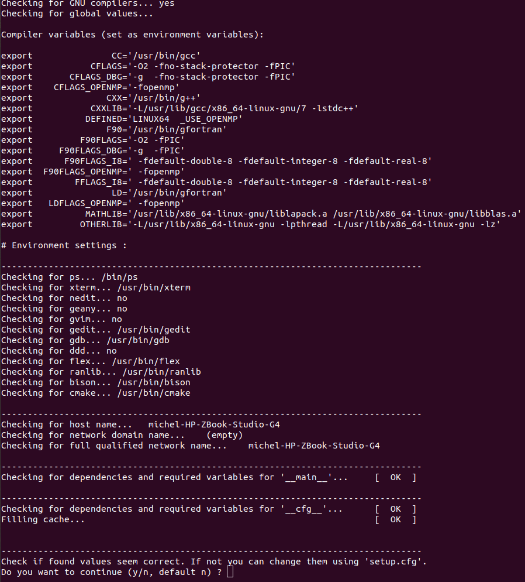
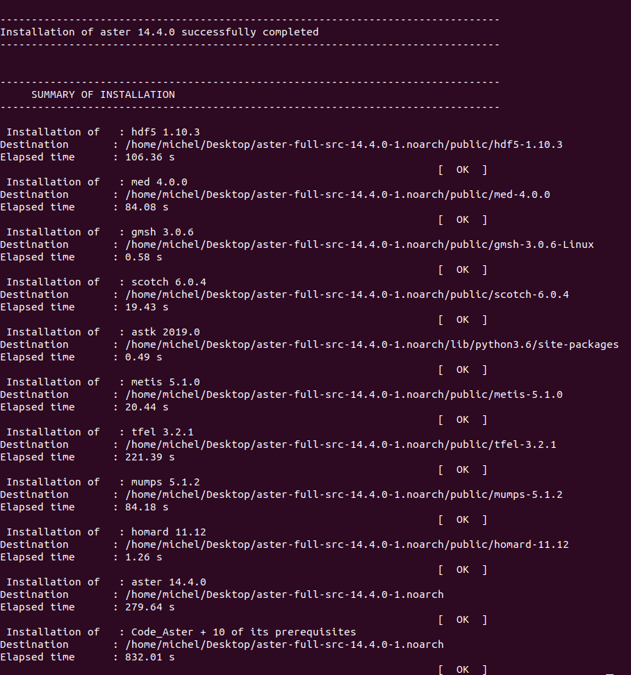
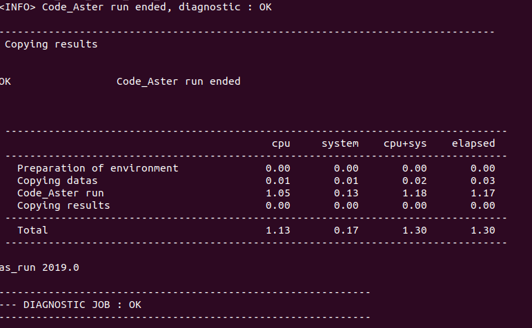
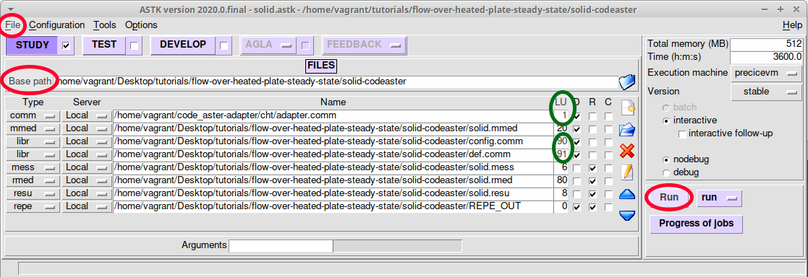

Requirements
The adapter requires at least preCICE v2.0. It was developed and tested again code_aster v14.4 and v14.6.
Since code_aster works with ‘command files’ that include integrated python code, you will need to the python bindings of preCICE to use this adapter:
Get code_aster
This part is meant as a brief overview for those who are not yet familiar with code_aster. Please consult the official documentation of code_aster for any issues.
There are two possible ways to install the code_aster solver on your system, but we only support the second one:
- The easiest and most intuitive way, is to install Salome-Meca. This is a user-friendly code_aster implementation, that also provides pre- and post-processing software. It can be used to create the mesh and model, and it also provides the post-processing software ParaVis.
- The second method to install code_aster on your system is to download a package containing the code_aster source code. This grants the possibility to run the code_aster solver from a script, but brings about some additional complexities during installation. This implementation of code_aster is supported for coupling with preCICE.
To install code_aster, download the full package from code-aster.org, under download. It is recommended to install a stable version of code_aster (here 14.6).
Dependencies
Make sure to have the code_aster dependencies installed before building code_aster.
For Ubuntu, you may install the following packages:
bison cmake make flex g++ gcc gfortran \
grace liblapack-dev libblas-dev \
libboost-numpy-dev libboost-python-dev \
python3 python3-dev python3-numpy \
tk zlib1g-dev
Building and installation
To initiate the installation of code_aster, redirect the terminal to the location of the setup.py file, and run the following command.
python3 setup.py install --prefix=/your/target/path
The installation will ask you to confirm the automatically-set environment soon after it starts. Make sure that none of the dependencies listed are missing, and that there are no unexpected messages. It can happen that some optional dependencies (such as nedit, geany or gvim) are not found, this is not a problem. Once confirmed that everything is correct, you can go ahead and tell the terminal to continue the installation.

code_aster and the bundled dependencies will now be built. This can take a while.
After the installation is done, check that all dependencies have been installed correctly. If a dependency was not installed correctly, go through the log file, and try to run the installation again. Alternatively, install the dependency manually and specify its path in setup.cfg. In this case, make sure that the required version of the tool is installed.

Once the solver has been installed successfully, add the following line to the bashrc (run gedit ~/.bashrc) and start a new session:
source $ASTER_ROOT/etc/codeaster/profile.sh
where $ASTER_ROOT you should replace with the actual path where you build code_aster. This line will make sure that once the user runs the just built code_aster version with the as_run command. If your package manager suggests to install a binary package of code_aster (do not install it), you may have not set the $ASTER_ROOT path correctly.
Testing
We can test the installation of code_aster with the following command:
as_run --vers=14.6 --test forma01a
If everything is as expected, the output should be --- DIAGNOSTIC JOB : OK.

Get the code_aster adapter
- Download the adapter code or, even better, clone the repository
https://github.com/precice/code_aster-adapter.git - Place the file
cht/adapter.pyin the code_aster directory, under$ASTER_ROOT/14.6/lib/aster/Execution.
Test cases
There is a tutorial available to help you get started with coupling code_aster through preCICE. In this tutorial, we couple code_aster as a solid solver, and OpenFOAM as a fluid solver for a flow-over-plate conjugate-heat-transfer scenario.
Required files for a coupled Simulation
You can find the tutorial files in the tutorial repository. The Solid directory contains, among others, the following files:
-
solid.astk: In a Code_Aster case, there is always an export file that links all the separate case files, specifying their functionality and their location. The export file also sets additional, system-dependent variables. The export file is to be generated from thesolid.astkfile, which can be done in ASTK as described below. -
example.export: This is a template export file to run this tutorial. Apart from being a reference example for the
solid.exportfile that is to be generated, it can be used to run this tutorial without using ASTK for generatingsolid.export. See Alternative: Skipping ASTK configuration below for more information. -
solid.mmed: This is the file that contains the mesh of the solid domain for Code_Aster. It can be opened and adapted with Salome Meca.
code_aster works with command files, which are the basis of every simulation case. The command files define the problem, the boundary conditions, the mesh that is used, and more parameters. When we couple Code_Aster with preCICE, we mainly use three command files:
-
adapter.comm: This is the main command file of a Code_Aster coupling. Code_Aster starts at this command file, which wraps the solver call in a loop and triggers the coupling operations. Through the INCLUDE command, invoked at the beginning, the other command files are included. This file is part of the Code_Aster adapter. -
def.comm: The test-case is defined in this command file. It is in charge of setting the mesh, model, materials, initial and boundary conditions. This file is case specific and is found in the tutorial repository. -
config.comm: This file is used to configure the coupling. This file is part of the Code_Aster adapter
Additionally, the following files are created when the coupling is run:
-
solid.mess: An output (message) file, which contains the Code_Aster log of a run. -
solid.rmed: This file is the ‘result mesh’ file, and has the same format as the mesh filesolid.mmed. It contains the result of the solid domain after a run, and can be opened with Salome Meca. In this tutorial, multiple rmed files will be generated and saved in the REPE_OUT folder. -
solid.resu: This file is also a ‘result mesh’ file, but it saves the results in ASCII format. It is not relevant for this tutorial.
Configuring the adapter
Generating the Export file
The solid.export file that is included in the tutorial needs to be configured for your local system. Alternatively, you can skip the generation of solid.export, and use the template export file provided. Please keep in mind that generating solid.export through ASTK, will tune Code_Aster to your local system and run more efficiently. To generate this file using ASTK, follow these steps:
-
Start astk from your terminal.
-
Click “File > Open…” and select the file
solid.astk. -
In the Base path field, set the path to your
solid-codeasterdirectory. Note that clicking on a text field and then clicking on the Base path, astk will auto-fill the selected field with the base path. -
The following should already be set by default:
-
Select under
D(input) the filesadapter.comm,solid.mmed,config.comm,def.comm. Select underR(output) the filessolid.mess,solid.rmed,solid.resu. -
For the
.commfiles, look at theLUvalues and make sure thatadapter.commis assigned toUNIT=1,def.commis assigned toUNIT=91, andconfig.commhasUNIT=90. The adapter.comm is the command file that comes with the Code_Aster adapter. For the rest of the files, ASTK will give the defaultUNITvalues. Make sure that these correspond to the values in the image below. -
Make sure that in ASTK, the
nodebugmode is selected. -
Lastly, add a new field of type
repe, by pressing theAdd Entrybutton on the right. In this field, pointREPE_OUTto be located in thesolid-codeasterdirectory, as shown in the image below. Make sure to also create this directory on your system. ThisREPE_OUTfolder will hold thermedoutput files of Code_Aster.
-
-
Now that you have updated the
solid.astkfile, save and export it from theFilemenu. You need to give a name for your file, e.g.solid.export. -
Click “Run” to generate the rest of the files and exit ASTK.
-
Run the case from a terminal as
as_run --run solid.export.

Setting the preCICE exchange directory
We currently need to manually set the exchange-directory in the m2n:sockets node:
<m2n:sockets from="Fluid" to="Solid" exchange-directory="tutorials/flow-over-heated-plate-steady-state"/>
See the respective issue for more details on why this is needed.
Post-processing
There are two methods to visualize the results for Code_Aster:
-
Salome-Meca is an integated graphical interface, which also offers a post-processing unit called ParaViS (based on ParaView). The nice thing about ParaViS, is that it can open both the results of OpenFOAM and Code-Aster at the same time. Please make sure to have salome-meca 2018 or newer, as the med files are not compatible with older versions. Before installing Salome-Meca, please make sure that the environment on your system uses Python 2.7 (see the respective Salome-Meca issue).
-
GMSH is a stand-alone visualization tool that can open files of med format. Please make sure to get a version that is compatible with med 4.0 (GMSH 4.5 is known to work).
History
The adapter was implemented as part of the master thesis of Lucia Cheung in cooperation with SimScale. For quick access: an excerpt of Lucia’s thesis focusing on the adapter